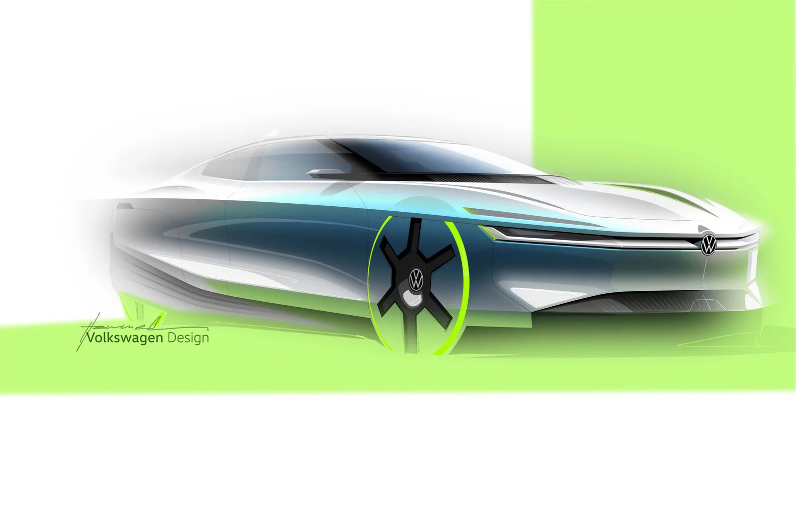
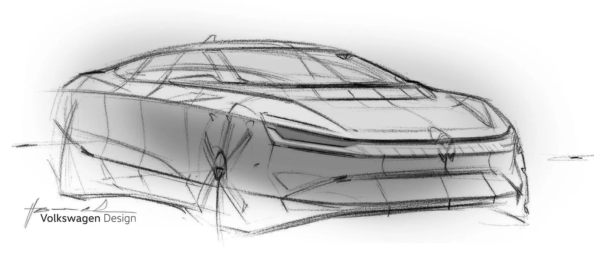
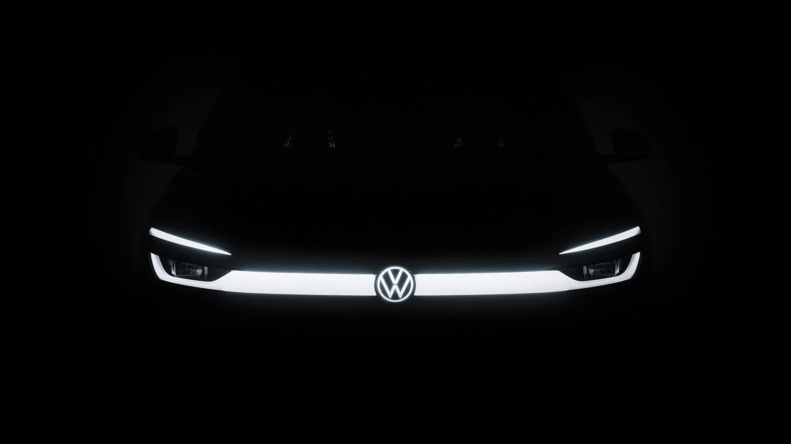
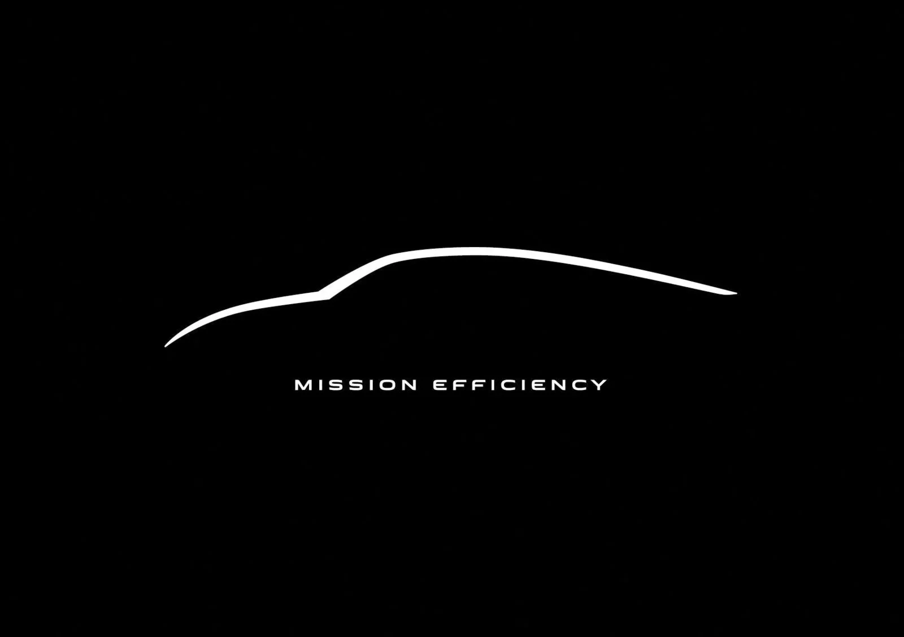

▲ 폭스바겐이 공개한 '미션 이피션시' 콘셉트 디자인 스케치. 눈물방울형 루프라인과 공력 휠 커버가 특징이다. 사진=폭스바겐
콘셉트 공개 배경: 폭스바겐이 '몰래' 준비해온 record run
폭스바겐이 새 콘셉트카 '미션 이피션시(Mission Efficiency)'를 티저 형태로 공개했다. 자사 뉴스룸에 실루엣 이미지와 디자인 스케치, 18초짜리 티저 영상을 올렸을 뿐, 구체적인 제원이나 사진은 아직 감추고 있다. 미국 매체 CarBuzz는 이를 두고 “폭스바겐이 미끄러운 신기록을 '요리(cooking)'하고 있다”고 표현했다. CarBuzz 원문에서 확인 가능
폭스바겐 뉴스룸이 밝힌 프로젝트의 핵심은 독일 볼프스부르크에서 오스트리아 빈까지, 약 780km(486마일)를 전기로 주파하는 기록 주행이다. 공력·에너지 효율·실사용 전기차 주행의 상관관계를 시험하겠다는 게 폭스바겐의 설명이다. 회사 측은 세부 내용을 9월 14일에 추가로 공개하겠다고 예고했다. 폭스바겐 뉴스룸에서 확인 가능
공기저항 신기록 수치와 의미: 정확한 Cd는 아직 비밀

▲ 폭스바겐 디자인팀이 그린 미션 이피션시의 측후면 스케치. 캄테일(Kamm-tail) 형태의 후미가 뚜렷하다. 사진=폭스바겐
가장 궁금한 대목인 정확한 공기저항계수(Cd)는 아직 공식 발표되지 않았다. 폭스바겐은 배터리 용량, 성능 수치와 함께 Cd 값도 9월 14일 공개 전까지 비공개로 유지하고 있다. 다만 업계에서는 이 콘셉트가 폭스바겐의 역대 최고 효율 모델이었던 XL1(디젤-전기 하이브리드, Cd 0.189)의 정신적 후속작으로 거론되는 만큼, 그에 필적하거나 이를 넘어서는 수치를 목표로 할 것이란 관측이 지배적이다.
참고로 현재 양산·콘셉트카를 통틀어 가장 낮은 Cd를 기록한 차량은 메르세데스-벤츠 비전 EQXX 콘셉트(Cd 0.17, 2022년 공개)이며, 폭스바겐의 현행 양산 전기 세단 ID.7의 Cd는 0.23이다. 미션 이피션시가 이 사이 어딘가, 혹은 그 이하의 수치를 낼 수 있다면 폭스바겐 역사상 가장 매끈한 차가 될 가능성이 크다. 공기저항계수가 낮을수록 같은 배터리 용량으로 더 먼 거리를 가거나, 같은 주행거리를 더 작은 배터리로 구현할 수 있다는 점에서 실질적 의미가 크다. 실제로 외신들은 폭스바겐이 이번 콘셉트를 통해 목표 주행거리 대비 필요한 배터리 용량을 예상보다 크게 줄이는 방안을 탐색 중이라고 전했다.
디자인 특징: XL1의 눈물방울, 순수 전기로 다시 쓰다

▲ 정면부 조명 라인만 드러낸 티저 이미지. 폭스바겐은 9월 14일까지 나머지 디자인을 감추고 있다. 사진=폭스바겐
공개된 스케치와 실루엣 이미지를 보면 미션 이피션시는 앞유리부터 트렁크까지 길게 흘러내리는 눈물방울형 루프라인과 높이 세운 캄테일(Kamm-tail) 후미를 갖췄다. 앞바퀴는 매끈한 공력 휠커버로 감쌌고, 뒷바퀴 위에는 스커트를 씌워 바퀴 주변 난류를 최소화했다. 이런 형태는 2014~2016년 생산된 XL1과 뚜렷하게 닮았지만, XL1이 디젤-전기 하이브리드였던 것과 달리 미션 이피션시는 순수 배터리 전기차(BEV)라는 점에서 근본적으로 다르다.
폭스바겐은 이 차를 “근생산(near-production) 콘셉트카”라고 못박았다. 순수 실험용 차가 아니라, 실제 양산 기술을 상당 부분 기반으로 만든 주행 가능한 차량이라는 의미다.
양산차 반영 가능성: XL1과는 다른 길을 걷는다
XL1은 전 세계 250대만 수작업으로 만들어진 초고가 스페셜티 모델로 끝났다. 반면 폭스바겐이 미션 이피션시를 굳이 “근생산 콘셉트”라고 강조하는 이유는, 이번엔 일부 기술을 실제 양산 라인업에 반영하겠다는 의도가 읽히기 때문이다. 앞서 폭스바겐은 양산 전기 세단 ID.7 개발 과정에서도 공력 성능을 핵심 개발 축으로 삼아 Cd 0.23·전면 투영 면적 2.46㎡라는 수치를 만들어낸 바 있다. ID.7 공력 개발 보도자료에서 확인 가능
업계에서는 미션 이피션시에서 검증된 공력 기술이 향후 저가형 ID 라인업(ID.2all, ID.EVERY1 등)이나 차세대 ID.7 후속 모델에 순차적으로 적용될 가능성을 주목한다. 배터리 용량을 줄이고도 목표 주행거리를 확보할 수 있다면, 배터리 원가 절감을 통한 전기차 가격 인하 효과로도 이어질 수 있다는 점에서 단순한 홍보용 콘셉트 이상의 의미를 지닌다.
경쟁사 공력 경쟁 구도: 테슬라·메르세데스·루시드도 '슬리퍼리 전쟁' 중

▲ 폭스바겐이 처음 공개한 미션 이피션시 실루엣 티저. 눈물방울형 캐빈과 낮게 눕힌 후드가 특징이다. 사진=폭스바겐
전기차 시대 들어 완성차 업체들의 '공기저항계수 낮추기 경쟁'은 이미 몇 해째 이어지고 있다. 2022년 메르세데스-벤츠가 콘셉트카 비전 EQXX로 Cd 0.17이라는 기록을 세웠고, 이 기술 일부는 실제 양산차 EQS(Cd 0.20)에 반영됐다. 테슬라는 최근 페이스리프트를 거친 모델 3의 Cd를 0.219까지 낮추며 “테슬라 역사상 가장 공기역학적인 차”라고 자평했고, 신생 전기차 업체 루시드는 루시드 에어의 Cd 0.197을 앞세워 “양산 럭셔리카 중 가장 낮은 공기저항계수”라고 홍보해왔다.
이런 흐름 속에서 폭스바겐이 미션 이피션시로 들고나오는 수치는 업계 판도를 다시 흔들 변수가 될 수 있다. 배터리 기술 발전 속도가 예상보다 더뎌지면서, 완성차 업체들이 '더 큰 배터리'보다 '더 적은 저항'으로 주행거리를 늘리는 방향에 다시 힘을 싣고 있다는 해석도 나온다. 폭스바겐이 9월 14일 예고한 세부 공개에서 정확한 Cd 수치와 함께 실제 볼프스부르크~빈 구간 완주 결과가 나오면, 이 경쟁 구도의 다음 기준점이 될 전망이다.